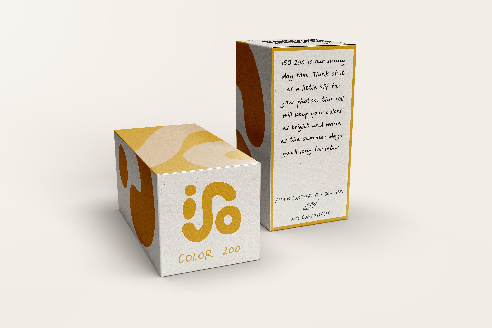

The following is a behind-the-scenes walkthrough of my design process, from moodboard and concept pitch to final deliverables.
I began with a moodboard - grounding my design choices with colors, type, and imagery that felt warm, and had a balance of nostalgia and contemporary. I took inspiration from old kodak packaging, ads, and the primary hues associated with developing film stock.
I then moved to naming–looking for photography terms that would hold a double meaning and incorporate the intention behind the brand. Of these, three surfaced:
I sketched and then digitiized the logos in Illustrator, eventually narrowing in on Macro and ISO as my finalists.
Understanding that either choice would take the project in a different direction, I began sharing these logos and seeking feedback from friends, fellow designers, and this capstone course. The feedback I received heavily favored iso for its unique hand drawn lockup and how it communicated a friendly and curious tone that aligned with this concept for a young, beginner-friendly photography brand.
Incorporating feedback, I continued forward with design adjustments to the form, making the s more rounded, finding supporting typography that would align with the hand crafted feel, and developing a branded pattern for alternative assets.

I began with the film box packaging designs, iterating and evolving the designs throughout the semester as I considered how a contemporary brand could stand out against established brands like Kodak or Fujifilm. I wanted to quickly distinguish film stocks from one another by branding each with a different color, and explored how to encourage the idea of collecting different film stocks by having them interact with each other on the shelf.
A major pain point that surfaced in user testing was feeling intimidated by knowing what film to buy and shoot with, so I wanted to address this in the packaging as well. Each box also contains friendly copy describing the environments each film stock thrives in so customers can feel educated and confident instead of confused and intimidated by this particular shopping experience.
I then designed several zines to help guide the user's photography journey. With advice like "Change your POV," each zine includes practical photography tips when taken literally, but double as metaphorical that also align with the ISO Film Co branded ethos.

These zines would correlate with themed kits that would include a guide, album, and the user's choice of film or a disposable camera. For added inspiration and reflection, the inner cover of each kit would be printed with a relevant quote by artists, authors, and famous photographers. Finally, on the online store, shoppers could view images in the ISO gallery, purchase merchandise and accessories, and customize a kit with the zines, cameras or film stocks, and accessories of their choice.